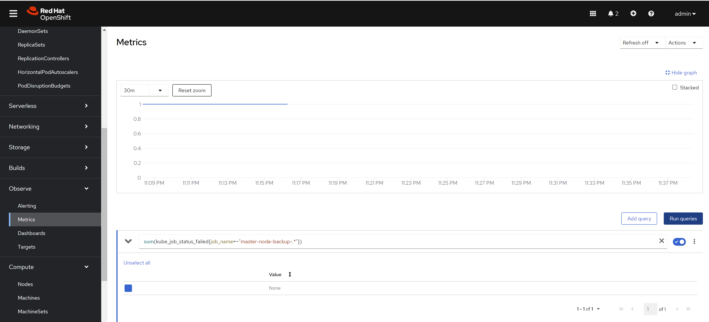
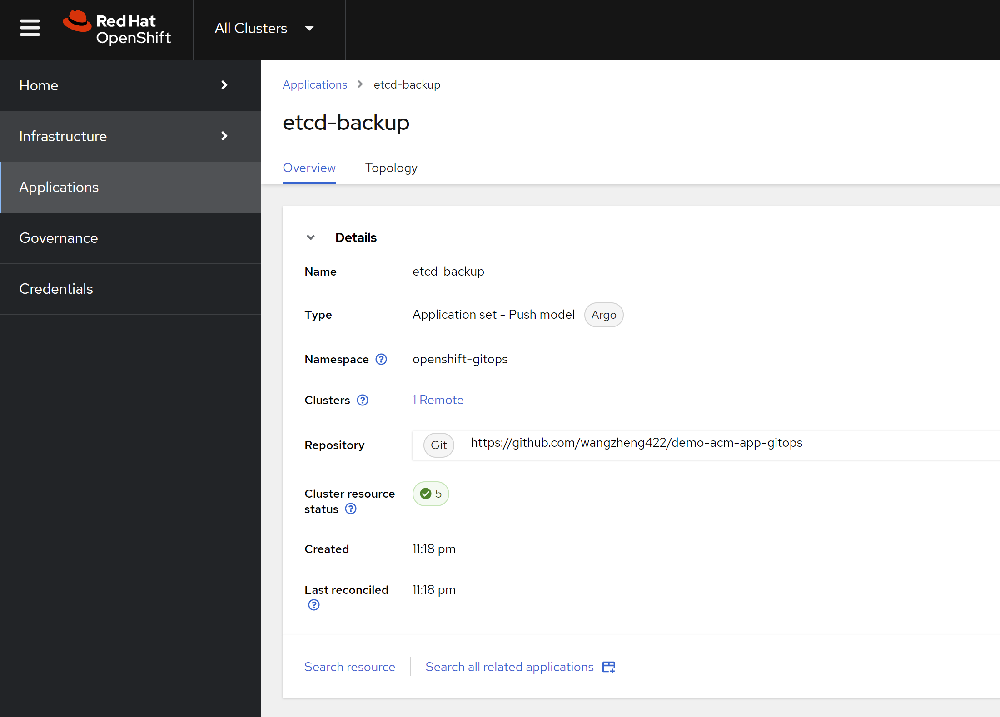
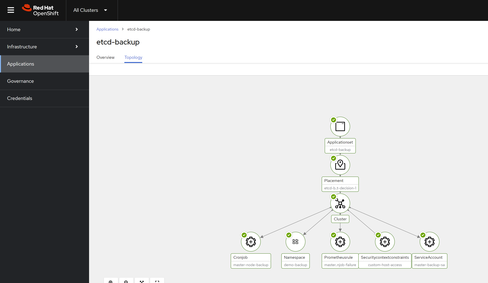

[!TIP] Ongoing and occasional updates and improvements.
backup etcd with cronjob
There is a common use case to backup etcd data in OpenShift. The etcd data is critical for the cluster, and it is necessary to backup it regularly. In this article, we will introduce how to backup etcd data with cronjob.
First, we check out how to backup etcd in offical openshift document:
- https://docs.redhat.com/en/documentation/openshift_container_platform/4.16/html-single/backup_and_restore/index#backing-up-etcd-data_backup-etcd
we can see, it run command
oc debug node/<node-name> -- chroot /host /usr/local/bin/cluster-backup.sh /home/core/assets/backup
to backup etcd data.
backup etcd with cronjob
Here, we wrap the command into a job, and run it with cronjob.
# we will create a namespace for the backup job
VAR_NS='demo-backup'
oc create ns ${VAR_NS}
# we create a service account for the backup job
# and scc with necessary permissions
cat << EOF > ${BASE_DIR}/data/install/etcd-backup-sa.yaml
---
apiVersion: v1
kind: ServiceAccount
metadata:
name: master-backup-sa
namespace: ${VAR_NS} # Adjust as necessary
---
apiVersion: security.openshift.io/v1
kind: SecurityContextConstraints
metadata:
name: custom-host-access
allowHostDirVolumePlugin: true
allowHostNetwork: true
allowPrivilegedContainer: true
allowPrivilegeEscalation: true
allowedCapabilities:
- '*'
defaultAddCapabilities: []
requiredDropCapabilities: []
runAsUser:
type: RunAsAny
seLinuxContext:
type: RunAsAny
fsGroup:
type: RunAsAny
supplementalGroups:
type: RunAsAny
volumes:
- '*'
users:
- system:serviceaccount:${VAR_NS}:master-backup-sa
EOF
oc apply -f ${BASE_DIR}/data/install/etcd-backup-sa.yaml
# oc delete -f ${BASE_DIR}/data/install/etcd-backup-sa.yaml
# we create a job to test the etcd backup
cat << EOF > ${BASE_DIR}/data/install/etcd-backup-job.yaml
---
apiVersion: batch/v1
kind: Job
metadata:
name: master-node-backup
spec:
template:
spec:
serviceAccountName: master-backup-sa # Use the created Service Account
hostNetwork: true
nodeSelector:
node-role.kubernetes.io/master: "" # Ensure the Job runs on the master node
containers:
- name: cluster-backup
image: registry.redhat.io/openshift4/ose-cli:latest # Official OpenShift CLI image
command: ["/bin/sh", "-c"]
args:
- |
chroot /host /usr/local/bin/cluster-backup.sh /home/core/assets/backup
securityContext:
privileged: true
runAsUser: 0 # Run as root
volumeMounts:
- name: host-volume
mountPath: /host # Mount the host's root filesystem
restartPolicy: OnFailure
volumes:
- name: host-volume
hostPath:
path: / # Mount the root filesystem of the master node
EOF
oc apply -f ${BASE_DIR}/data/install/etcd-backup-job.yaml -n ${VAR_NS}
# oc delete -f ${BASE_DIR}/data/install/etcd-backup-job.yaml -n ${VAR_NS}
# we wrap the job into cronjob, and run it at mid-night
cat << EOF > ${BASE_DIR}/data/install/etcd-backup-cronjob.yaml
---
apiVersion: batch/v1
kind: CronJob
metadata:
name: master-node-backup
spec:
schedule: "0 1 * * *" # run every mid-night
jobTemplate:
spec:
backoffLimit: 0 # Do not retry on failure
template:
spec:
serviceAccountName: master-backup-sa # Use the created Service Account
hostNetwork: true
nodeSelector:
node-role.kubernetes.io/master: "" # Ensure the Job runs on the master node
containers:
- name: cluster-backup
image: registry.redhat.io/openshift4/ose-cli:latest # Official OpenShift CLI image
command: ["/bin/sh", "-c"]
args:
- |
chroot /host /usr/local/bin/cluster-backup.sh /home/core/assets/backup
securityContext:
privileged: true
runAsUser: 0 # Run as root
volumeMounts:
- name: host-volume
mountPath: /host # Mount the host's root filesystem
restartPolicy: Never # Do not restart containers on failure
volumes:
- name: host-volume
hostPath:
path: / # Mount the root filesystem of the master node
EOF
oc apply -f ${BASE_DIR}/data/install/etcd-backup-cronjob.yaml -n ${VAR_NS}
# oc delete -f ${BASE_DIR}/data/install/etcd-backup-cronjob.yaml -n ${VAR_NS}Here, we define the prometheus rule to monitor the backup job. It based on a pre-defined prometheus metrics in openshift.

apiVersion: monitoring.coreos.com/v1
kind: PrometheusRule
metadata:
name: master-node-backup-cronjob-failure
namespace: openshift-monitoring
spec:
groups:
- name: cronjob-failure-alerts
rules:
- alert: MasterNodeBackupCronJobFailed
expr: sum(kube_job_status_failed{job_name=~"master-node-backup-.*"}) > 0
for: 1d
labels:
severity: critical
annotations:
summary: "CronJob 'master-node-backup' runs failed"
description: "CronJob 'master-node-backup' The last run failed. Please check the relevant logs and resources."deploy using acm
Here we deploy the cronjob using acm, so we can make sure every cluster has the same backup job.
We already created the demo gitops repo, you can check the source code here:
- https://github.com/wangzheng422/demo-acm-app-gitops/tree/main/gitops/etcd-backup
We create the application in acm, and it will deploy the job and alert rule to the cluster. Here is the acm config result.

And here is the deployment result.

[!TIP] You can deploy the etcd backup job using policy as well.